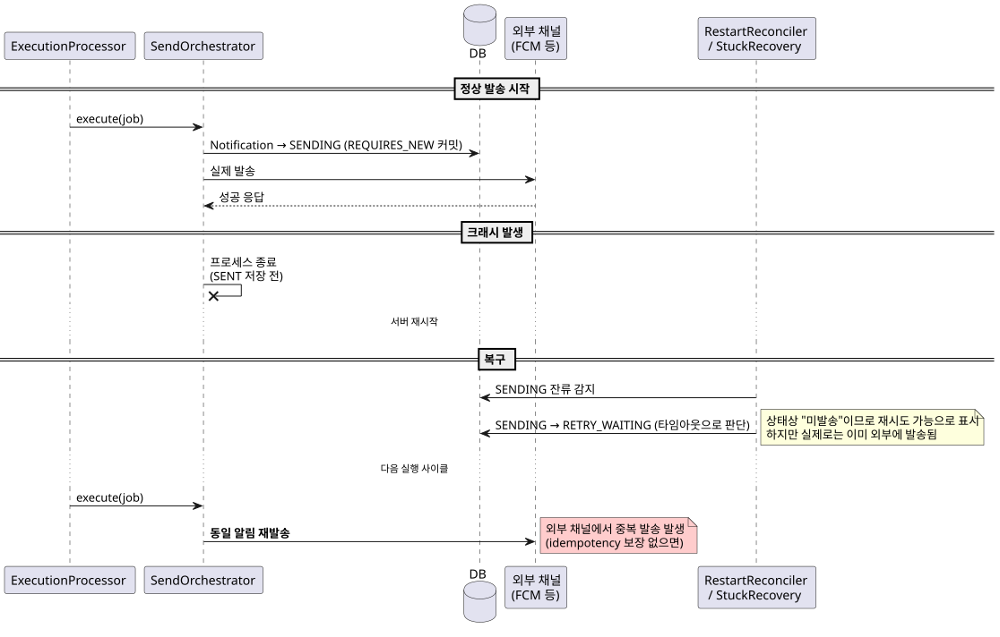
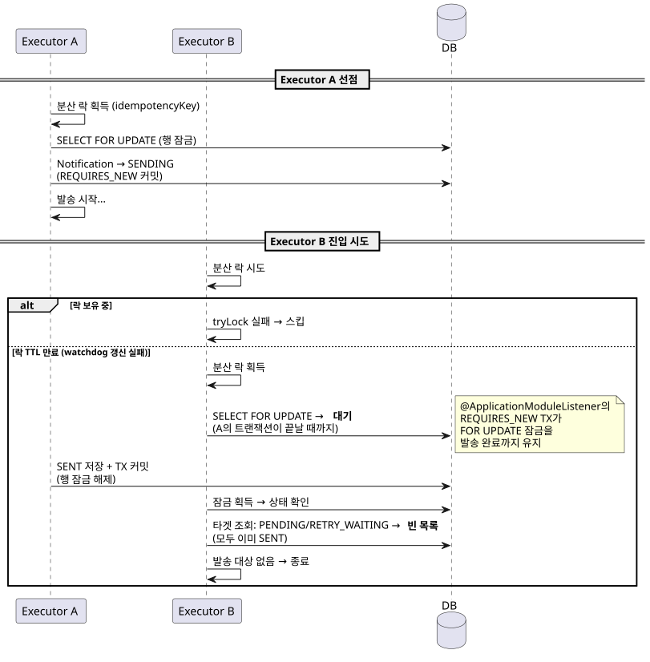

개요
`NotificationJob`은 알림 발송의 단위입니다. Job은 7개의 상태를 가지며, UseCase/Scheduler/Processor가 `JobNotificationPolicy`를 통해 상태를 전이합니다.
이 문서는 누가(실행 주체) 어떤 정책(Policy)을 사용하여 상태를 전이하는지를 종합적으로 기술합니다.
Job 상태 설명
| 상태 | 유형 | 설명 |
|---|---|---|
|
초기 |
Job이 생성된 초기 상태. 발송 시각 확정 전 |
|
진행 |
발송 시각이 확정되어 스케줄러에 등록된 상태 |
|
진행 |
알림 발송이 실제로 진행 중인 상태 |
|
진행 |
실패/취소 후 재처리를 준비 중인 상태 |
|
취소 |
Job이 취소된 상태. RETRYING으로 재시도 가능 |
|
오류 |
처리 중 실패한 상태. RETRYING으로 전이 가능 |
|
종료 |
모든 알림 발송이 완료된 최종 상태 (terminal) |
JobNotificationPolicy (정책)
`JobNotificationPolicy`는 Job 상태 전이와 그에 수반되는 Notification 상태 전이를 하나의 enum 상수로 선언합니다. 호출부가 정책 상수를 명시적으로 선택하며, 런타임에서 동적 조회는 하지 않습니다.
정책 목록
| 정책 | Job From | Job To | Notification 전이 |
|---|---|---|---|
|
CREATED |
SCHEDULED |
없음 |
|
SCHEDULED, RETRYING |
PROCESSING |
PENDING → SENDING |
|
CREATED, SCHEDULED, RETRYING |
CANCELLED |
PENDING → CANCELLED |
|
FAILED, CANCELLED |
RETRYING |
DEAD_LETTER → RETRY_WAITING |
|
PROCESSING |
COMPLETED |
없음 |
|
PROCESSING |
FAILED |
없음 |
|
PROCESSING |
FAILED |
SENDING → DEAD_LETTER |
|
PROCESSING |
PROCESSING |
SENDING → RETRY_WAITING |
정책이 적용되는 방식
`NotificationJob`은 두 가지 방식으로 정책을 사용합니다.
-
Job 상태 전이 —
transitionTo(policy): `policy.fromStatuses`에 현재 상태가 포함되면 `policy.toStatus`로 전이 -
Notification 상태 전이 검증 —
assertNotificationTransitionAllowed(policy, from, to): 정책에 선언된NotificationTransition집합에 해당 전이가 포함되는지 확인
// Job 상태 전이 (예: markProcessing)
public boolean markProcessing() {
return transitionTo(JobNotificationPolicy.TO_PROCESSING);
}
// Notification 상태 전이 검증 (예: startSendingNotification)
public void startSendingNotification(Notification n) {
assertNotificationTransitionAllowed(
JobNotificationPolicy.TO_PROCESSING,
n.getStatus(), NotificationStatus.SENDING);
n.markSending();
}실행 주체별 상태 전이
UseCase (사용자 요청)
| 클래스 | 전이 | 정책 | 비고 |
|---|---|---|---|
|
→ CREATED |
(팩토리) |
Job + Notification(PENDING) 생성, |
|
CREATED/SCHEDULED/RETRYING → CANCELLED |
|
분산 락 + SELECT FOR UPDATE. |
|
FAILED/CANCELLED → RETRYING |
|
분산 락 + SELECT FOR UPDATE. |
Processor (이벤트 핸들러)
| 클래스 | 전이 | 정책 | 비고 |
|---|---|---|---|
|
CREATED → SCHEDULED |
|
|
|
(PROCESSING 상태 확인 후 실행) |
— |
|
|
— |
— |
|
Relay (DB 스케줄 폴링)
| 클래스 | 전이 | 정책 | 비고 |
|---|---|---|---|
|
SCHEDULED → PROCESSING |
|
INITIAL 타입 스케줄 폴링. |
|
FAILED → RETRYING |
|
RETRY 타입 스케줄 폴링. |
Schedule (주기적 폴링 / 기동 시 복구)
| 클래스 | 전이 | 정책 | 비고 |
|---|---|---|---|
|
RETRYING → PROCESSING |
|
RETRYING Job 폴링. |
|
— |
— |
PROCESSING Job 폴링. |
|
PROCESSING → FAILED |
|
타임아웃 초과 PROCESSING Job 감지. |
|
— |
|
|
동시성 제어
방어 메커니즘
모든 상태 전이 주체는 다음 패턴을 조합하여 중복 처리를 방지합니다:
-
분산 락 (
DistributedLock.tryLock(idempotencyKey, ttl)) — 다중 인스턴스 간 상호 배제 -
SELECT FOR UPDATE (
findByIdAndDeletedFalseForUpdate) — DB 수준 행 잠금으로 동시 전이 차단 -
상태 재검증 — 잠금 획득 후 현재 상태가 전이 가능한지 재확인 (예:
markProcessing()실패 시 스킵) -
SENDING 선점 저장 — 발송 전 Notification을 SENDING으로 먼저 커밋하여 다른 실행자가 같은 알림을 선택하지 못하게 함
| 실행 주체 | 분산 락 | SELECT FOR UPDATE | Watchdog |
|---|---|---|---|
CreateScheduledNotificationJobUseCase |
O |
X |
X |
CancelNotificationJobUseCase |
O |
O |
X |
RecoverNotificationJobUseCase |
O |
O |
X |
NotificationJobCreatedProcessor |
O |
X |
X |
NotificationJobExecutionProcessor |
O |
O |
O (TTL/3) |
DbScheduledNotificationJobRelay |
X |
O |
X |
DbRetryScheduledNotificationRecoverRelay |
O |
O |
X |
RetryingNotificationJobExecutionScheduler |
O |
O |
X |
StuckProcessingRecoveryScheduler |
O |
O |
X |
NotificationJobRestartReconciler |
X |
O |
X |
중복 발송 방지 분석
이 시스템의 핵심 요구사항은 같은 Notification이 두 번 발송되면 안 된다는 것입니다. 아래는 중복 발송이 발생할 수 있는 시나리오와 현재 방어 구조를 분석한 결과입니다.
현재 모델의 성격
현재 구조는 exactly-once가 아닌 복구 가능한 at-least-once 발송 모델입니다.
-
중복 실행 억제는 잘 하고 있음
-
하지만 중복 발송 절대 금지를 외부 채널 수준에서 보장하지는 못함
가장 큰 이유는 외부 발송 성공과 DB 상태 반영(SENT)이 원자적이지 않기 때문입니다.
시나리오 1: 외부 발송 성공 후 크래시 (위험도: 높음)
상황: Notification이 외부 채널로 실제 발송된 직후, DB에 SENT로 반영하기 전에 프로세스가 종료됩니다.
흐름:

방어 (시스템 레벨): 없음. Job/Notification 상태 머신에서는 방지 불가능.
방어 (채널 레벨): 외부 발송 채널이 idempotency key를 지원하면 차단 가능. 예: 이메일 서비스의 Message-ID, FCM의 send_id.
판단: 구현 실수가 아니라 구조적 한계입니다. 외부 시스템과의 분산 트랜잭션 없이는 시스템 레벨 완전 방지 불가능. at-least-once 모델의 근본적 한계이므로, 외부 채널의 idempotency 보장에 의존합니다.
시나리오 2: 같은 Job에 대한 이중 실행 (위험도: 방어됨)
상황: `ProcessingNotificationJobExecutionScheduler`가 PROCESSING 상태의 Job에 대해 execution event를 반복 발행합니다. 두 ExecutionProcessor가 동시에 같은 Job을 처리하려 합니다.
흐름:

방어: 3단계로 방어됩니다.
-
분산 락 — 대부분의 중복 진입을 차단
-
SELECT FOR UPDATE — `@ApplicationModuleListener`의 REQUIRES_NEW 트랜잭션 범위와 행 잠금이 일치하여, 발송 완료까지 다른 실행자가 대기
-
SENDING 선점 저장 — 이미 SENDING/SENT인 알림은 다음 실행에서 대상에서 제외
판단: 현재 구조에서 이 시나리오는 안전합니다.
시나리오 3: StuckRecovery와 활성 실행의 충돌 (위험도: 방어됨)
상황: Job이 `stuckTimeoutSeconds`를 초과했지만 실제로는 아직 발송 중입니다. `StuckProcessingRecoveryScheduler`가 이를 "스턱"으로 오판합니다.
방어 구조:
-
분산 락 동일 키 — ExecutionProcessor와 StuckRecovery 모두 같은
idempotencyKey`로 락을 시도. 실행 중이면 StuckRecovery가 `tryLock실패로 스킵 -
락 TTL 만료 시 — StuckRecovery가 락을 획득해도 SELECT FOR UPDATE에서 ExecutionProcessor의 트랜잭션이 끝날 때까지 대기. 트랜잭션 완료 후 상태를 확인하면 이미 COMPLETED/FAILED
판단: 시나리오 2와 동일한 메커니즘으로 방어됩니다.
시나리오 4: 스케줄 중복 처리 (위험도: 낮음)
상황: `DbScheduledNotificationJobRelay`에서 두 인스턴스가 같은 스케줄 row를 읽고 각각 처리를 시도합니다.
방어: processScheduledJob`이 REQUIRES_NEW 트랜잭션 안에서 `findByIdAndDeletedFalseForUpdate`로 행 잠금을 잡으므로, 첫 번째 인스턴스가 SCHEDULED → PROCESSING 전이 후, 두 번째 인스턴스는 `markProcessing() 실패로 스킵합니다. Job 중복 전이와 중복 발송 모두 발생하지 않습니다.
시나리오 5: Recover UC와 RetryingScheduler 레이스 (위험도: 없음)
상황: `RecoverNotificationJobUseCase`가 RETRYING으로 전이하는 동안 `RetryingNotificationJobExecutionScheduler`가 해당 Job을 감지합니다.
방어: RecoverUC는 TransactionTemplate 안에서 RETRYING 전이 + Notification 리셋을 원자적으로 처리하고, 분산 락을 트랜잭션 커밋 이후에 해제합니다. RetryingScheduler는 같은 키로 락을 시도하므로 UC 완료 전까지 진입 불가. 완료 후에는 Job(RETRYING) + Notification(RETRY_WAITING)이 모두 커밋된 상태입니다.
트랜잭션 경계 설계
외부 서비스 호출(NotificationJobSchedulePort, NotificationService)은 트랜잭션 밖에서 수행됩니다.
이 설계의 이유와 각 호출 지점의 실패 시 영향을 정리합니다.
원칙
외부 서비스 호출이 트랜잭션 안에 있으면 두 가지 문제가 발생합니다:
-
행 잠금 보유 시간 증가 — 외부 호출 응답 대기 동안 FOR UPDATE 잠금이 유지되어 다른 실행 주체를 차단
-
롤백 시 불일치 — 외부 호출 성공 후 TX 롤백 시, 외부에는 반영됐지만 DB에는 반영되지 않은 상태 발생
따라서 DB 상태 전이를 먼저 커밋하고, 외부 호출은 이후에 수행합니다.
호출 지점별 설계
외부 스케줄러 호출은 `NotificationJobScheduleEvent`를 통해 분리됩니다. 이벤트는 상태 전이 TX 안에서 발행되고, Spring Modulith가 TX 커밋 후 별도 TX에서 소비합니다.
| 발행 주체 | 이벤트 action | 소비 동작 | 소비 실패 시 |
|---|---|---|---|
|
|
|
Job은 SCHEDULED이지만 스케줄 row 없음. |
|
|
|
고아 스케줄 잔존. |
|
|
|
자동 재시도 미등록. |
분리하지 않는 호출: NotificationService.send()
NotificationService.send()(외부 채널 발송)는 트랜잭션 안에서 호출됩니다.
이는 의도적인 설계입니다:
-
`sendingStatePersister`가 SENDING 상태를 별도 REQUIRES_NEW TX로 먼저 커밋
-
외부 발송은 `@ApplicationModuleListener`의 TX 안에서 실행
-
발송 결과(SENT/FAILED)와 Job 최종 상태(COMPLETED/FAILED)가 원자적으로 커밋
발송을 TX 밖으로 빼면 "발송 성공 + DB 반영 실패" 시 복구가 더 어려워집니다. 현재 구조에서는 발송과 결과 저장이 같은 TX에 있으므로, 크래시가 아닌 한 일관성이 유지됩니다.
트레이드오프: 외부 발송 응답 대기 동안 행 잠금이 유지됩니다. 알림 수가 많거나 외부 채널 응답이 느리면 잠금 보유 시간이 길어질 수 있습니다.
UC의 락-트랜잭션 순서
UseCase(Cancel, Recover, Create)는 `TransactionTemplate`을 사용하여
트랜잭션 커밋 → 분산 락 해제 순서를 보장합니다.
try {
transactionTemplate.execute(status -> {
// DB 작업 (상태 전이, Notification 변경)
});
// ← TX 커밋 완료
// 외부 서비스 호출 (schedulePort 등)
} finally {
distributedLock.unlock(...);
// ← 락 해제 — 다른 실행 주체가 진입해도 커밋된 상태를 읽음
}@Transactional 대신 `TransactionTemplate`을 사용하는 이유는,
`@Transactional`에서는 `finally`의 락 해제가 메서드 반환 전에 실행되어
TX 커밋보다 먼저 락이 풀리는 창(window)이 생기기 때문입니다.
이벤트 흐름
| 이벤트 | 발행 주체 | 소비 주체 |
|---|---|---|
|
|
|
|
|
|
|
|
|
|
|
|
|
Note
|
`NotificationJobScheduleEvent`는 상태 전이 TX 안에서 발행되고, 커밋 후 별도 TX에서 소비됩니다. 이렇게 분리하여 외부 서비스 호출이 상태 전이 트랜잭션의 행 잠금을 연장하지 않도록 합니다. |